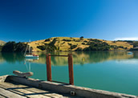
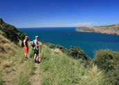

Akaroa
A scenic one hour drive from Christchurch, Akaroa is a quaint little fishing town situated on the southern side of Bank Peninsula. The town has a distinct French flavour to it. Many street names are of French origin because of its French Whaling history.
Akaroa is quiet, relaxed and perfect for anyone wishing to unwind from a hectic day in the city. For a little more adventure, try the Akaroa Harbour Cruises which take you to see a Seal colony along with the opportunity to swim with Hectors dolphins. French Farm Winery on the western side of the harbour is also worth a visit.
Banks Peninsula is an extinct volcano which lies east of Christchurch and is characterised by its circular shape, steep sided hills that sweep down to beautiful inlets and bays. A great way to exlore the rugged beauty of this area is to walk the Banks Peninsula Track, a multi-day walk across farmland and the Hinewai reserve covering 35 km of spectacular volcanic coastline, native bush, waterfalls and sandy beaches.